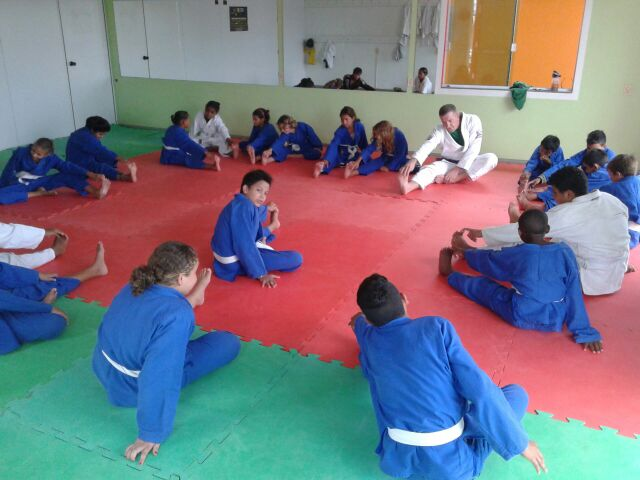
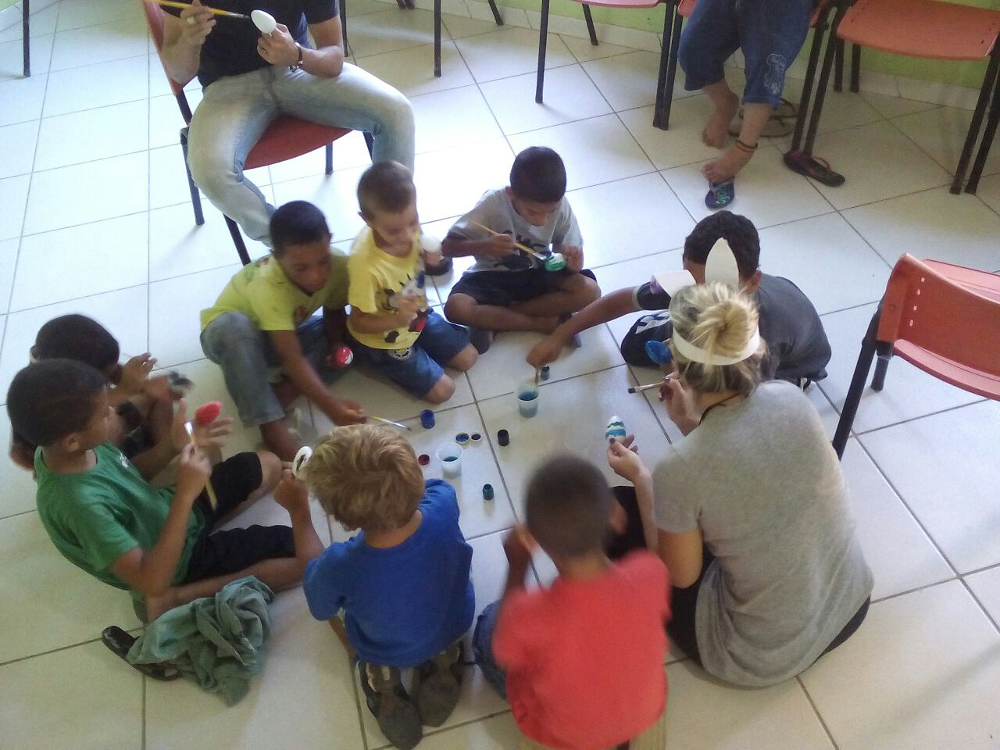
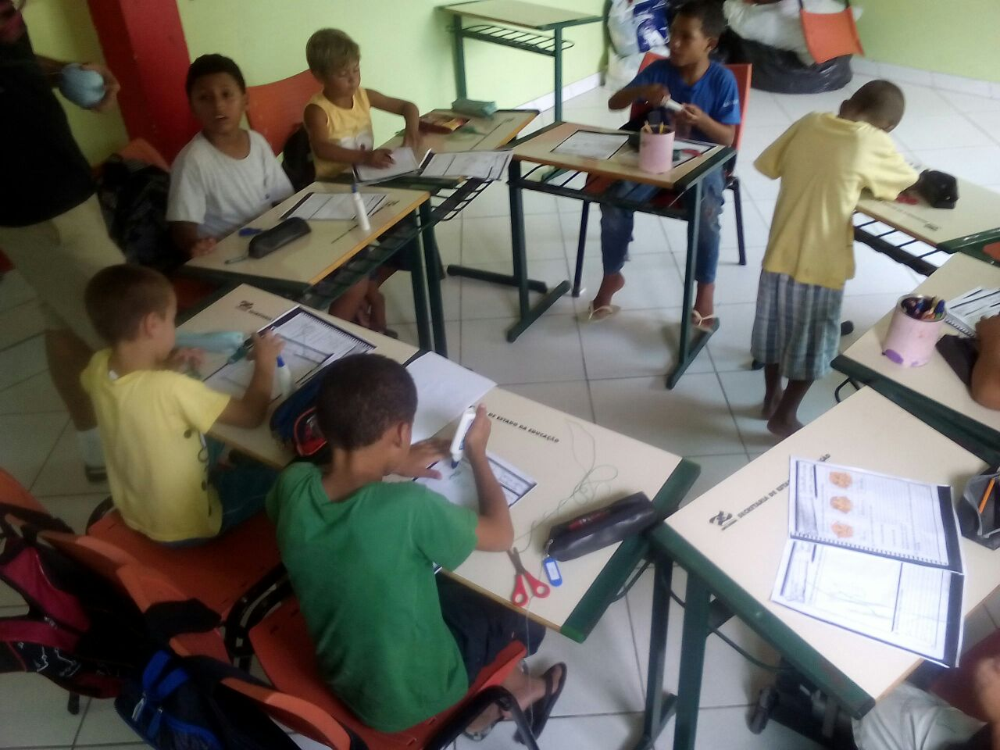
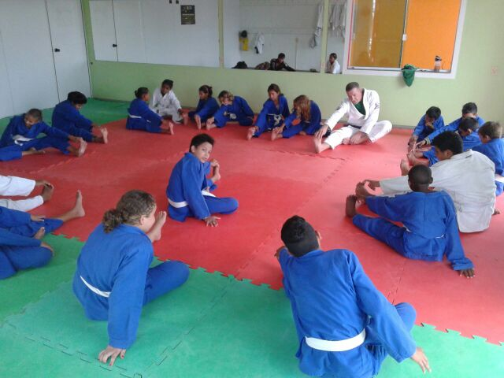
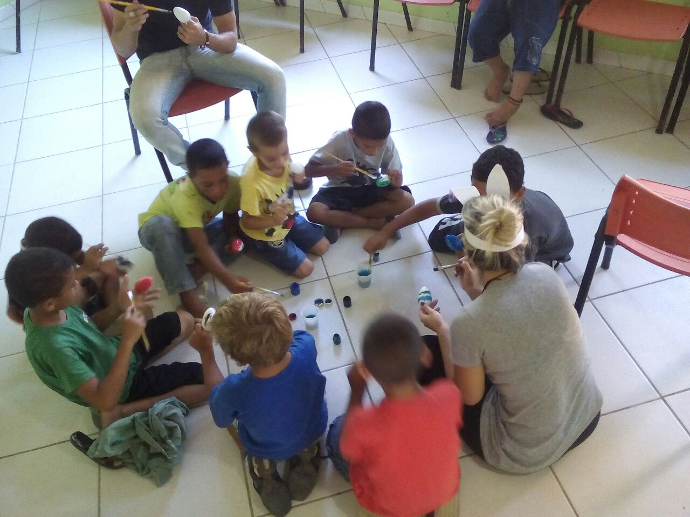
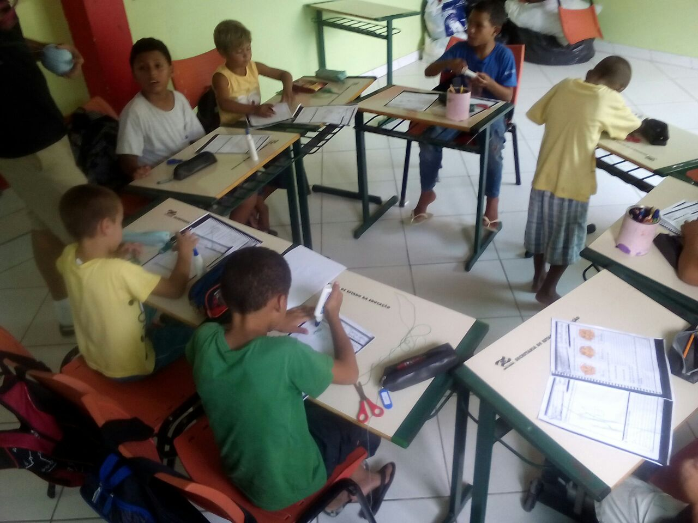

Code Club
The Dorcas project is a brazilian non-profit organization, founded in 2013. It has it's children unit in Frei Damião, the biggest favela of Santa Catarina (state of Brazil) with the intent to promote social justice and transformation through socio-educational initiatives. This project takes care of forty five children and teenagers (from 6 to 16 years), developing several activities like: english, music, dance, martial art classes and also provides them the daily food. All the collaborators are voluntary and everything is provided through donations.
In the beginning of 2017, a new project called Code Club will start, which aims to teach kids (starting from 7 years old), to learn programming logic through the creation of games and animations, stimulating their creative and intellectual development.
Computer programming is an important ability these days and we believe that children also needs to know how the technological resources work internally to develop the necessary knowledge that will make them go beyond excel spreadsheets, text writing or using the internet, they will actually produce their own programs. In a context of social vulnerability and poor, this, will surely provide good perspectives and a better future for the kids.
To the accomplishment of this project, we need the help to buy seven computers. The price of each computer is U$415 dollars and a total of U$2905 dollars. If you want to contribute with this project please do your donation.
Donation Website: https://www.donationto.com/Dorcas-Project-Code-Club
 





Project Website: www.projetodorcas.org.br